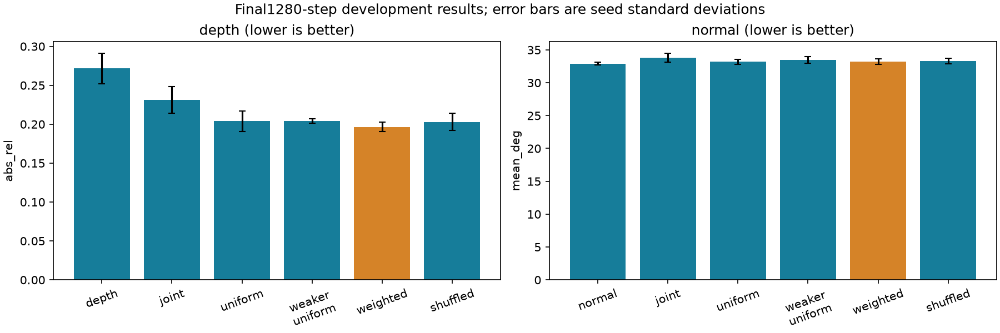
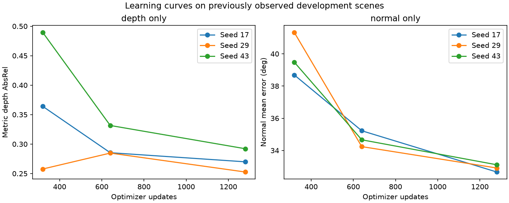

ELEC4240 | V9 | Observed development scenes; exploratory evidence
Matched reliability-weighted model ablation
All seven conditions and three seeds are complete. Read the task-wise errors and corrected comparisons together; no single consistency score establishes better geometry.
Marigold Depth v1.1, rank-4 shared attention LoRA, 829,952 trainable parameters, 192×256 processing, fixed metric log-depth codec, 128 training scenes, 32 previously observed development scenes, seeds 17/29/43, 1,280 updates per run. Normal targets are derived from depth and are not independent surface-normal ground truth. No per-image ground-truth depth alignment is used.
Final checkpoint results
Accuracy values are the mean ± sample standard deviation of the three seed means. Lower AbsRel and normal angular error are better. Times sum three optimizer loops; loading, checkpoint I/O and validation are excluded. Joint models receive one image exposure per task per update.
| Condition | Depth AbsRel | Normal mean degrees | Optimizer minutes | Peak allocated MiB |
|---|
| depth | 0.27155 ± 0.01980 | Not applicable | 36.04 | 2674.6 |
| normal | Not applicable | 32.89563 ± 0.22503 | 14.52 | 2674.6 |
| joint | 0.23108 ± 0.01731 | 33.83898 ± 0.67297 | 31.88 | 2604.3 |
| uniform | 0.20385 ± 0.01339 | 33.21161 ± 0.37344 | 43.25 | 3164.7 |
| weaker_uniform | 0.20431 ± 0.00288 | 33.47212 ± 0.46483 | 43.29 | 3164.7 |
| weighted | 0.19654 ± 0.00615 | 33.18815 ± 0.41550 | 43.45 | 3164.7 |
| shuffled | 0.20288 ± 0.01106 | 33.29745 ± 0.40620 | 43.34 | 3164.7 |

Single-task learning curves
| Task | Update | Mean | Seeds 17 / 29 / 43 |
|---|
| depth | 320 | 0.37039 | 0.36400, 0.25770, 0.48945 |
| depth | 640 | 0.30055 | 0.28535, 0.28473, 0.33157 |
| depth | 1280 | 0.27155 | 0.26990, 0.25262, 0.29212 |
| normal | 320 | 39.83250 | 38.68791, 41.32749, 39.48210 |
| normal | 640 | 34.70785 | 35.22349, 34.23862, 34.66143 |
| normal | 1280 | 32.89563 | 32.66307, 32.91152, 33.11229 |

Baseline gate: final mean error no more than 5% worse than step-320 mean for each task, with finite runs and exact final-checkpoint inference restoration. Passing is not a stationarity or convergence test. All comparisons use the fixed final checkpoint.
Six predeclared exploratory contrasts
| Comparison | Task | Difference | Unadjusted 95% interval | Holm6 p | Interpretation |
|---|
| weighted vs uniform | depth | -0.007313 | [-0.018054, +0.003429] | 0.731963 | difference not established |
| weighted vs uniform | normal | -0.023461 | [-0.264871, +0.217950] | 0.832908 | difference not established |
| weighted vs weaker_uniform | depth | -0.007771 | [-0.021500, +0.005958] | 0.731963 | difference not established |
| weighted vs weaker_uniform | normal | -0.283965 | [-0.645789, +0.077859] | 0.731963 | difference not established |
| weighted vs shuffled | depth | -0.006337 | [-0.015022, +0.002348] | 0.731963 | difference not established |
| weighted vs shuffled | normal | -0.109298 | [-0.294899, +0.076303] | 0.731963 | difference not established |
Differences are weighted minus reference, so negative favors weighting. Intervals are unadjusted symmetric bootstrap intervals. Centered two-sided tests use 20,000 paired crossed seed/scene resamples and one Holm family of six contrasts. There are only three seeds and one training draw. A non-significant normal difference does not prove no harm; no non-inferiority margin or claim is introduced after results.
Descriptive failure analysis
High-gradient regions are the top 10% of ground-truth depth-gradient magnitude within each task's fixed valid mask. The remaining valid pixels form the comparison group. These regions are identical across methods and add no hypothesis tests. Depth values below are AbsRel; normal values are angular error in degrees.
| Condition | Task | High gradient | Other valid |
|---|
| depth | depth | 0.27685 | 0.27096 |
| normal | normal | 52.99983 | 30.66175 |
| joint | depth | 0.23932 | 0.23017 |
| joint | normal | 54.19225 | 31.57743 |
| uniform | depth | 0.21594 | 0.20251 |
| uniform | normal | 52.84534 | 31.03001 |
| weaker_uniform | depth | 0.21643 | 0.20297 |
| weaker_uniform | normal | 53.00118 | 31.30215 |
| weighted | depth | 0.21047 | 0.19499 |
| weighted | normal | 52.57873 | 31.03357 |
| shuffled | depth | 0.21532 | 0.20150 |
| shuffled | normal | 52.80379 | 31.13001 |
Prediction-to-prediction agreement
| Condition | Mean disagreement degrees |
|---|
| joint | 36.4447 |
| uniform | 24.9475 |
| weaker_uniform | 29.8154 |
| weighted | 25.3430 |
| shuffled | 25.0673 |
Computed at saved full resolution, unlike the native-resolution training loss. Better agreement is not proof of better accuracy.
Verification and reproducibility
- 1536 saved task predictions independently recomputed and hash-checked.
- 33 saved adapter checkpoints verified; 36 final checkpoint-task predictions reproduced exactly in freshly loaded models.
- 26880 training updates checked, with identical image order across corresponding seeds and matched task exposure.
- All 160 source/derived data pairs checked; 1307 historical report/result files unchanged.
The serialization/RNG resume test passes on its CUDA test model. Diffusion-model training itself is not guaranteed bitwise deterministic: the first new single-task run matched V7 input order and first forward loss but differed slightly in the first backward gradient. The exact cause has not been isolated. Old V7 numbers are historical context; current single-task controls were trained afresh under the same runner. This is distinct from exact saved-checkpoint inference restoration.
Scope and next evidence
- All32evaluation scenes were previously observed.
- One training draw and three seeds.
- Normal targets are depth-derived, not independent ground truth.
- Six contrasts form one exploratory Holm family. Intervals are unadjusted.
- Nonsignificance does not establish equivalence or no harm.
- Fixed1280updates do not prove convergence.
- No new independent scenes or general superiority claim.
The V8 synthetic component gain describes selection of supervision, not a model gain. A useful model result requires actual task error improvements under matched controls. Any independent confirmation must freeze the selected method, comparisons and sample-size plan before obtaining unobserved scene groups.
Execution details | Experiment design | Audited analysis | Frozen protocol | Earlier component study